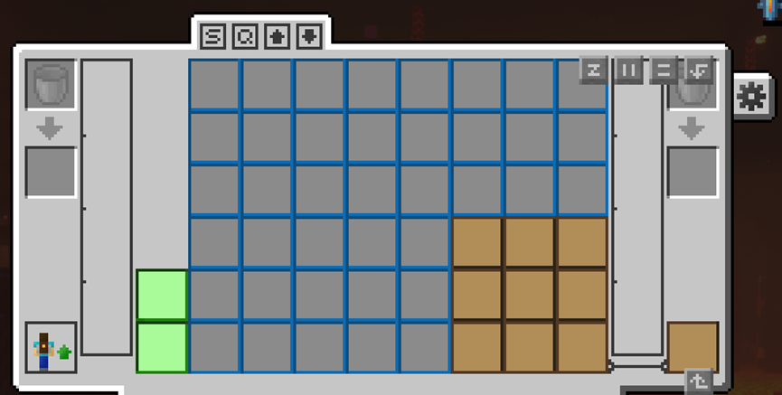

2.大幅优化游戏体验的一些设置
2.1 两个背包模组的设置
本服务器安装了两种背包模组（imnis，旅行者背包）及对应升级。初始背包的合成方式如下图所示。
其中，imnis背包占据饰品栏的背包栏位
旅行者背包的使用方式如下图。

注意：请于控制->按键绑定中调整快速打开背包和使用背包功能的快捷键；建议先处理掉所有所有非必要功能的按键冲突后再设置。2.2 REI
请自行点击链接进行了解
这是一个链接
2.3 FTB任务系统
为帮助玩家熟悉不同的mod，服务器提供ftb任务系统和共享任务系统。
当打开原版背包界面时，任务书会出现在左上角
该任务系统为主要mod提供了完整的游玩流程，并且当玩家完成任务时，会提供（大部分为该模组的幸运袋）奖励给玩家，优化游戏体验
2.4 光影
于选项->视频设置->光影包中开启